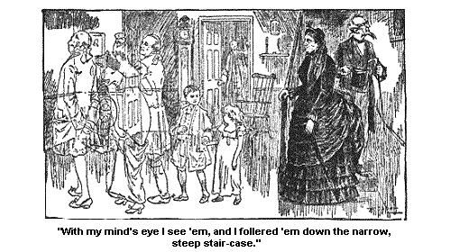
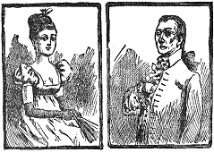

A TRIP TO SCHUYLERVILLE.
It wuz a lovely mornin' when my companion and me sot out to visit Schuylerville to see the monument that is stood up there in honor of the Battle of Saratoga, one of 7 great decisive battles of the world.
Wall, the cars rolled on peacefully, though screechin' occasionally, for, as the poet says, "It is their nater to," and rolled us away from Saratoga. And at first there wuzn't nothin' particularly insperin' in the looks of the landscape, or ruther woodscape. It wuz mostly woods and rather hombly woods too, kinder flat lookin'. But pretty soon the scenery became beautiful and impressive. The rollin' hills rolled down and up in great billowy masses of green and pale blue, accordin' as they wuz fur or near, and we went by shinin' water, and a glowin' landscape, and pretty houses, and fields of grain and corn, etc., etc. And anon we reached a place where "Victory Mills" wuz printed up high, in big letters. When Josiah see this, he sez, "Haint that neighborly and friendly in Victory to come over here and put up a mill? That shows, Samantha," sez he, "that the old hardness of the Revolution is entirely done away with."
He wuz jest full of Revolutionary thoughts that mornin', Josiah Allen wuz. And so wuz I too, but my strength of mind is such, that I reined 'em in and didn't let 'em run away with me. And I told him that it didn't mean that. Sez I, "The Widder Albert wouldn't come over here and go to millin', she nor none of her family."
"But," sez he, "the name must mean sunthin'. Do you s'pose it is where folks get the victory over things? If it is, I'd give a dollar bill to get a grist ground out here, and," sez he, in a sort of a coaxin' tone, "le's stop and get some victory, Samantha."
And I told him, that I guessed when he got a victory over the world, the flesh, or the -- David, he would have to work for it, he wouldn't get it ground out for him. But anon, he cast his eyes on sunthin' else and so forgot to muse on this any further. It wuz a fair seen.
Anon, a big manufactory, as big as the hull side of Jonesville almost, loomed up by the side of us. And anon, the fair, the beautiful country spread itself out before our vision. While fur, fur away the pale blue mountains peeked up over the green ones, to see if they too could see the monument riz up to our National Liberty. It belonged to them, jest as much as to the hill it wuz a standin' on, it belongs to the hull liberty-lovin' world.
Wall, the cars stopped in a pretty little village, a clean, pleasant little place as I ever see, or want to see. And Josiah and me wended our way up the broad roomy street, up to where the monument seemed to sort a beegon to us to come. And when we got up to it; we see it wuz a sight, a sight to behold.
The curius thing on't wuz, it kep a growin' bigger and bigger all the time we wuz approachin' it, till, as we stood at its base, it seemed to tower up into the very skies.
There wuz some flights of stun steps a leadin' up to some doors in the side on't. And we went inside on't after we had gin a good look at the outside. But it took us some time to get through gazin' at the outside on't.
Way up over our heads wuz some sort a recesses, some like the recess in my spare bed-room, only higher and narrower, and kinder nobler lookin'. And standin' up in the first one, a lookin' stiddy through storm and shine at the North star, stood General Gates, bigger than life considerable, but none too big; for his deeds and the deeds of all of our old 4 fathers stand out now and seem a good deal bigger than life. Yes, take 'em in all their consequences, a sight bigger.
Wall, there he stands, a leanin' on his sword. He'll be ready when the enemy comes, no danger but what he will.
On the east side, is General Schuyler a horsback, ready to dash forward against the foe, impetuous, ardent, gallant. But oh! the perils and dangers that obstruct his pathway; thick underbrush and high, tall trees stand up round him that he seemin'ly can't get through.
But his gallant soldiers are a helpin' him onward, they are a cuttin' down the trees so's he can get through 'em and dash at the enemy. You see as you look on him that he will get through it all. No envy, nor detraction, nor jealousy, no such low underbrush full of crawlin' reptiles, nor no high solid trees, no danger of any sort can keep him back. His big brave, generous heart is sot on helpin' his country, he'll do it.
On the south side, is the saddest sight that a patriotic American can see. On a plain slab stun, lookin' a good deal like a permanent grave-stun, sot up high there, for Americans to weep over forever, bitter tears of shames, is the name, "Arnold."
He wuz a brave soldier; his name ort to be there; it is all right to have it there and jest where it is, on a gravestun. All through the centuries it will stand there, a name carved by the hand of cupidity, selfishness, and treachery.
On the west side, General Morgan is standin' up with his hands over his eyes; lookin' away into the sunset. He looked jest like that when he wuz a lookin' after prowlin' red skins and red coats; when the sun wuz under dark clouds, and the day wuz dark 100 years ago.
But now, all he has to do is to stand up there and look off into the glowin' heavens, a watchin' the golden light of the sun of Liberty a rollin' on westward. He holds his hand over his eyes; its rays most blind him, he is most lost a thinkin' how fur, how fur them rays are a spreadin', and a glowin',way, way off, Morgan is a lookin' onto our future, and it dazzles him. Its rays stretch off into other lands; they strike dark places; they burn! they glow! they shine! they light up the world!
Hold up your head, brave old General, and your loyal steadfast eyes. You helped to strike that light. Its radience half-frights you. It is so heavenly bright, its rays, may well dazzle you. Brown old soldiers, I love to think of you always a standin' up there, lifted high up by a grateful Nation, a lookin' off over all the world, a lookin' off towards the glowin' west, toward our glorious future.
On the inside too, it wuz a noble seen. After you rose up the steps and went inside, you found yourself in a middlin' big room all surrounded by figures in what they called Alto Relief, or sunthin' to that effect. I don't know what Alto they meant. I don't know nobody by that name, nor I don't know how they relieved him. But I s'pose Alto when he wuz there wuz relieved to think that the figures wuz all so noble and impressive. Mebby he had been afraid they wouldn't suit him and the nation. But they did, they must have. He must have been hard to suit, Alto must, if he wuzn't relieved, and pleased with these.
On one side wuz George the 3d of England, in his magnificent palace, all dressed up in velvet and lace, surrounded by his slick drestup nobles, and all of 'em a sittin' there soft and warm, in the lap of Luxury, a makin' laws to bind the strugglin' colonies.
And right acrost from that, wuz a picture of them Colonists, cold and hungry, a havin' a Rally for Freedom, and a settin' up a Town meetin! right amongst the trees, and under-brush that hedged 'em all in and tripped 'em up at every step; and savages a hidin' behind the trees, and fears of old England, and dread of a hazerdous unknown future, a hantin' and cloudin' every glimpse of sky that came down on 'em through the trees. But they looked earnest and good, them old 4 fathers did, and the Town meetin' looked determined, and firm principled as ever a Town meetin' looked on the face of the earth.
Then there wuz some of the women of the court, fine ladies, all silk, and ribbons, and embroideries, and paint, and powder, a leanin' back in their cushioned arm-chairs, a wantin' to have the colonies taxed still further so's to have more money to buy lace with and artificial flowers. And right acrost from 'em wuz some of our old 4 mothers, in a rude, log hut, not strong enough to keep out the cold, or the Injuns.
One wuz a cardin' wools, one of 'em wuz a spinnin' 'em, a tryin' to make clothes to cover the starved, half-naked old 4 fathers who wuz a tramplin' round in the snow with bare feet and shiverin' lims. And one of 'em had a gun in her hand. She had smuggled the children all in behind her and she wuz a lookin' out for the foe. These wimmen hadn't no ribbons on, no, fur from it.
And then there wuz General Schuyler a fellin' trees to obstruct the march of the British army. And Miss Schuyler a settin' fire to a field of wheat rather than have it help the enemy of her country. Brave old 4 mother, worthy pardner of a grand man, she wuz a takin' her life in her hand and a destroyin' her own property for the sake of the cause she loved. A emblem of the way men and women sot fire to their own hopes, their own happiness, and burnt 'em up on the altar of the land we love.
And there wuz some British wimmen a follerin' their husbands through
the perils of danger and death, likely old 4 mothers they wuz, and thought
jest as much of their pardners as I do of my Josiah. I could see
that plain. And could see it a shinin'
still plainer in another one of the pictures -- Lady Aukland a goin'
over the Hudson in a little canoe with the waves a dashin' up high round
her, to get to the sick bed of her companion. The white flag of truce
wuz a wavin' over her head and in her heart wuz a shinin' the clear white
light of a woman's deathless devotion. Oh! there wuz likely wimmen
amongst the British, I haint a doubt of it, and men too.
And then we clim a long flight of stairs and we see some more pictures, all round that room. Alto relieved agin, or he must have been relieved, and happified to see 'em, they wuz so impressive. I myself had from 25 to 30 emotions a minute while I stood a lookin' at em -- big lofty emotions too.
There waz Jennie McCrea a bein' dragged offen her horse, and killed by savages. A dreadful sight -- a woman settin' out light-hearted toward happiness and goin' to meet a fearful doom. Dreadful sight that has come down through the centuries, and happens over and over agin amongst female wimmen. But here it wuz fearful impressive for the savages that destroyed her wuz in livin' form, they haint always materialized.
Yes, it wuz a awful seen. And jest beyond it, wuz Burgoyne a scoldin' the savages for the cruelty of the deed. Curius, haint it? How the acts and deeds of a man that he sets to goin', when they have come to full fruition skare him most to death, horrify him by the sight. I'll bet Burgoyne felt bad enough, a lookin' on her dead body, if it wuz his doin's in the first place, in lettin' loose such ignerance and savagery onto a strugglin' people.
Yes, Mr. Burgoyne felt bad and ashamed, I haint a doubt of it. His poet soul could suffer as well as enjoy -- and then I didn't feel like sayin' too much aginst Mr. Burgoyne, havin' meditated so lately in the treachery of Arnold, one of our own men doin' a act that ort to keep us sort a humble-minded to this day.
And then there wuz the killin' and buryin' of Frazier both impressive. He wuz a gallant officer and a brave man. And then there wuz General Schuyler (a good creeter) a turnin' over his command to Gates. And I methought to myself as I looked on it, that human nater wuz jest about the same then; it capered jest about as it duz now in public affairs and offices. Then there wuz the surrender of Burgoyne to Gates. A sight impressive enough to furnish one with stiddy emotions for weeks and weeks. A thinkin' of all he surrendered to him that day, and all that wuz took.
The monument is dretful high. Up, up, up, it soars as if it wuz bound to reach up into the very heavens, and carry up there these idees of ourn about Free Rights, and National Liberty. It don't go clear up, though. I wish it did. If it had, I should have gone up the high ladder clear to the top. But I desisted from the enterprise for 2 reasons, one wuz, that it didn't go, as I say, clear up, and the other wuz that the stairs wuzn't finished.
Josiah proposed that he should go up as he clim up our well, with one foot on each side on't. He said he wuz tempted to, for he wanted dretfully to look out of them windows on the top. And he said it would probable be expected of him. And I told him that I guessed that the monument wouldn't feel hurt if he didn't go up; I guessed it would stand it. I discouraged the enterprise.
And anon we went down out of the monument, and crossed over to the good-lookin' house where the man lives who takes care of the monument, and shows off its good traits, a kind of a guardian to it. And we got a first-rate dinner there, though such is not their practice. And then he took us in a likely buggy with 2 seats, and a horse to draw it, and we sot out to see what the march of 100 years has left us of the doin's of them days.
Time has trampled out a good many of 'em, but we found some. We found the old Schuyler mansion, a settin' back amongst the trees, with the old knocker on it, that had been pulled by so many a old 4 father, carryin' tidin's of disappointment, and hope, and triumph, and encouragement, and everything. We went over the threshold wore down by the steps that had fell there for a hundred years, some light, some heavy steps.
We went into the clean, good-lookin' old kitchen, with the platters, and shinin' dressers and trays; the old-fashioned settee, half-table and half-seat. And we see the cup General Washington drinked tea out of, good old creeter. I hope the water biled and it wuz good tea, and most probable it wuz. And we see lots of arms that had been carried in the war, and cannon balls, and shells, and tommy-hawks, and hatchets, and arrows, and etc., etc. And down in one room all full of other curiosities and relicts, wuz the skull of a traitor. I should judge from the looks on't that besides bein' mean, he wuz a hombly man. Somebody said folks had made efforts to steal it. But Josiah whispered to me, that there wuzn't no danger from him, for he would rather be shet right up in the Tombs than to own it, in any way.
And I felt some like him. Some of his teeth had been stole, so they said. Good land! what did they want with his teeth! But it wuz a dretful interestin' spot. And I thought as I went through the big square, roomy rooms that I wouldn't swap this good old house for dozens of Queen Anns, or any other of the fashionable, furbelowed houses of to-day. The orniments of this house wuz more on the inside, and I couldn't help thinkin' that this house, compared with the modern ornimental cottages, wuz a good deal like one of our good old-fashioned foremothers in her plain gown, compared with some of the grandma's of to-day, all paint, and furbelows, and false hair.
The old 4 mothers orniments wuz on the inside, and the others wuz more up on the roof, scalloped off and gingerbreaded, and criss-crossed.
The old house wuz full of rooms fixed off beautiful. It wuz quite a treat to walk throngh'em. But the old fireplaces, and mantle tray shelves spoke to our hearts of the generations that had poked them fires, and leaned up against them mantle trays. They went ahead on us through the old rooms; I couldn't see 'em, but I felt their presence, as I follered 'em over the old thresholts their feet had worn down a hundred years ago. Their feet didn't make no sound, their petticoats and short gowns didn't rustle against the old door ways and stair cases.
The dear old grandpas in their embroidered coats, didn't cast no shadow as they crossed the sunshine that came in through the old-fashioned window panes. No, but with my mind's eye (the best eye I have got, and one that don't wear specks) I see 'em, and I follerd 'em down the narrow, steep stair case, and out into the broad light of 4 P. M., 1886.

Anon, or shortly after, we drove up on a corner of the street jest above where the Fish creek empties into the Hudson, and there, right on a tall high brick block, wuz a tablet, showin' that a tree once stood jest there, under which Burgoyne surrendered. And agin, when I thought of all that he surrendered that day, and all that America and the world gained, my emotions riz up so powerful, that they wuzn't quelled down a mite, by seein' right on the other side of the house wrote down these words, "Drugs, Oils, etc."
No, oil couldn't smooth 'em down, nor drugs drug 'em; they wuz too powerful. And they lasted jest as soarin' and eloquent as ever till we turned down a cross street, and arrove at the place, jest the identical spot where the British stacked their arms (and stacked all their pride, and their ambitious hopes with 'em). It made a high pile.
Wall, from there we went up to a house on a hill, where poor Baroness Riedesel hid with her three little children, amongst the wounded and dyin' officers of the British army, and stayed there three days and three nights, while shots and shells wuz a bombardin' the little house -- and not knowin' but some of the shots had gone through her lover husband's heart, before they struck the low ruff over her head.
What do you s'pose she wuz a thinkin' on as she lay hid in that suller all them three days and three nights with her little girls' heads in her lap? Jest the same thoughts that a mother thinks to-day, as she cowers down with the children she loves, to hide from danger; jest the same thoughts that a wife thinks today when her heart is out a facing danger and death, with the man she loves.
She faced danger, and died a hundred deaths in the thought of the danger to them she loved. I see the very splinters that the cruel shells and cannon balls split and tore right over her head. Good honorable splinters and not skairful to look at today, but hard, and piercin', and harrowin' through them days and nights.
Time has trampled over that calash she rode round so much in (I wish I could a seen it); but Time has ground it down into dust. Time's hand, quiet but heavy, rested down on the shinin' heads of the three little girls, and their Pa and Ma, and pushed 'em gently but firmly down out of sight; and all of them savages who used to follow that calash as it rolled onwards, and all their canoes, and war hoops, and snowshoes, etc., etc.
Yes, that calash of Miss Riedesel has rolled away, rolled away years ago, carryin' the three little girls, their Pa and Ma and all the fears, and hopes, and dreads, and joys, and heartaches of that time it has rolled on with 'em all; on, on, down the dusty road of Oblivion, -- it has disappeared there round the turn of road, and a cloud of dust comes up into our faces, as we try to follow it. And the Injuns that used to howl round it, have all follered on the trail of that calash, and gone on, on, out of sight. Their canoes have drifted away down the blue Hudson, away off into the mist and the shadows. Curius, haint it?
And there the same hills and valleys lay, calm and placid, there is the same blue sparklin' Hudson. Dretful curius, and sort a heart breakin' to think on't -- haint it? Only jest a few more years and we, too, shall go round the turn of the road, out of sight, out of sight, and a cloud of dust will come up and hide us from the faces of them that love us, and them, too, from the eyes of a newer people.
All our hopes, all our ambitious, all our loves, our joys, our sorrows, -- all, all will be rolled away or floated away down the river, and the ripples will ripple on jest as happy; the Sunshine will kiss the hills jest as warmly, and lovin'ly; but other eyes will look on 'em, other hearts will throb and burn within 'em at the sight.
Kinder sad to think on, haint it?
